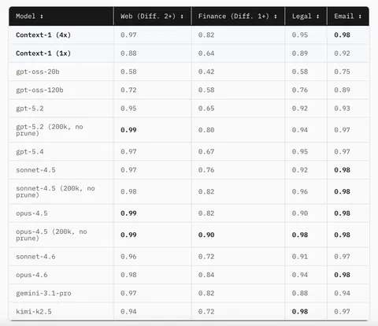
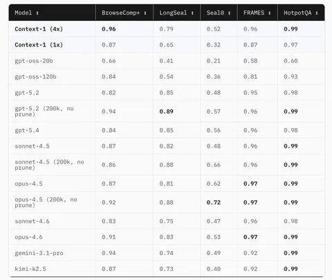

Продолжаем изучать агент Context-1. В первой части мы рассмотрели, что это вообще такое и какие задачи перед собой ставили авторы. А в этой части поговорим о метриках и обучении.
Для оценки качества ответа авторы предлагают использовать четыре метрики: Final answer found (смогла ли модель найти документ с правильным ответом в выдаче), Recall (доля релевантных документов, которые выбрала модель, от общего числа релевантных документов), Precision (число релевантных документов, которые модель отвергла) и FB (среднее гармоническое Recall и Precision; идея авторов в том, чтобы штрафовать модель за отбор нерелевантных документов только под конец обучения). Также предлагают рассматривать Trajectory recall, оценивая качество траекторий и поощряя модель за отбор нужных документов и не награждая чрезмерно за случайное нахождение верного ответа.
На SFT авторы генерировали некоторое количество траекторий с помощью Kimi K2.5. Дальше заводили RLVR на модели gpt-oss-20b с LoRA. Вместо GRPO применяют CISPO — модификацию, которая позволяет лучше бороться с энтропийным коллапсом. Что касается реворда, то здесь на модель накладываются два штрафа: за уменьшение контекста несколько раз подряд и за количество шагов (если их больше 64).
В результате модель научилась чаще работать с параллельным вызовом инструментов и лучшему прунингу в сравнении с базовой gpt-oss-20b. А число шагов в траекториях сократилось. С результатами по четырём доменам — веб, финансы, юридическая информация и электронная почта — можно ознакомиться в первой таблице.
Обратите внимание, что Context-1(4x) — это конфигурация, на которой запущено сразу четыре агента, а результаты их выдачи объединены с помощью метода Reciprocal Rank Fusion. Авторы отмечают, что даже в таком случае требуется меньше ресурсов, чем на запуск крупных моделей. Что же касается опенсорсных бенчмарков (таблица 2), то тут оценивалось, есть ли финальный ответ в документах, которые выбрала модель.
В финале авторы отмечают, что им не хватает разнообразия задач — все они представляют собой таски вида «найди что-то в ворохе документов». Также в работе говорится, что потенциально к используемым инструментам можно добавить и тулы для написания кода, и оркестратор. Наконец, предлагается поработать над менеджментом контекста: например, сохранять какое-то минимальное количество информации из выкинутых документов или суммаризировать большие страницы.
Разбор подготовил
Душный NLP

